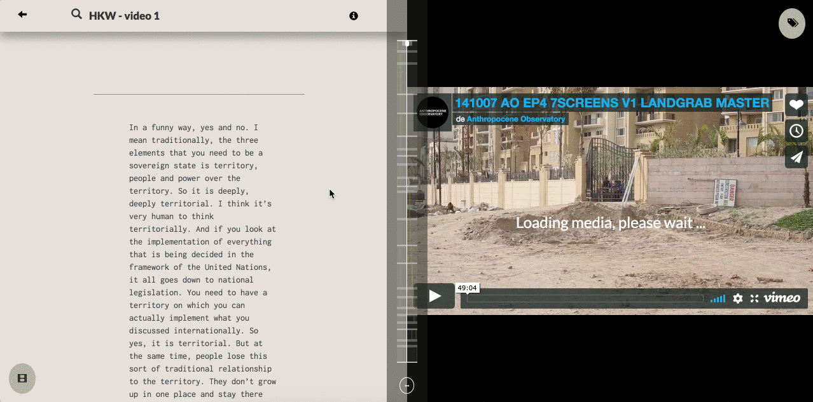

The Anthropocene Observatory, a project by Armin Linke, Territorial Agency and Anselm Franke, collects and documents practices and discourses about the formation of the Anthropocene thesis and reveal the behind-the-scenes of these processes. At the GLOBALE: Exo-Evolution exhibition at ZKM, we designed an interactive installation to allow the visitors to explore the themes and interviews collected by the Anthropocene Observatory. The visitors could interact with a visualization projected on a table and with the use of a tablet could explore the connections between the different topics and finally create their own customized video playlists.
The data used for the interactive installation has been created by tagging the video interviews provided by the Anthropocene Observatory team. We divided each video in different parts according to the topics discussed by the interviewed thorugh a specific software developed by Robin de Mourat (link here). Thanks to this software, the Anthropocene Observatory team could tag the different video with keywords to describe the topics addressed in the interviews. For each part we also added the name of the speakers and the geographic places mentioned in the interview.
The Anthropocene Observatory Explorer main goal is to allow the interaction between the archival material and the visitors of the exhibition. The interactive installation is made up of two views on two different devices, a tablet and a projection.
On the tablet the user can explore and select a maximum of three tags. Once the user select a specific tag, the related video snippets are added to the playlist. Once a playlist is created the user can edit it interacting with the thumbnails or play it. Once the playlist is played on the projection, the tablet works both as remote control and display for the transcripts of the videos.
The default view in the projection is a visualization of the different tags used to classify the interviews. Each bubble represent a tag and its size correspond to the number of times it has been used. Once the user select a tag, the visualization is dinamycally updated. The select tag become more visibile and move towards the center of the visualization together with the co-occurring tags. Every time the user select a new tag on the tablet, a new bubble is added to the visualization and the related tags are updated as well. Once the user play the video the projection become the primary view, displaying the videos accordingly.
Click here and follow the instructions to try the online demo.